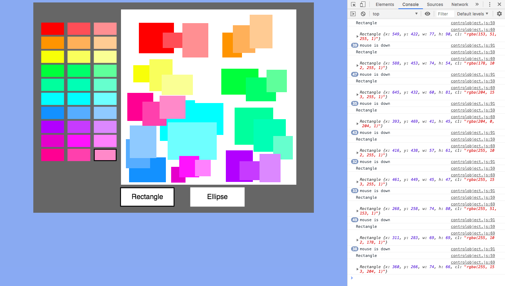

Test 1: Showing that the sprint works
Test 2: Showing that it the user must choose both a colour and a shape before drawing
Colour testing:

Example of making the colour shades more defined:

Test 3: Showing improved colour palette and layout of padding-left